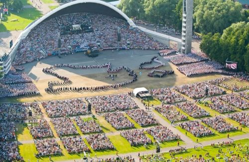
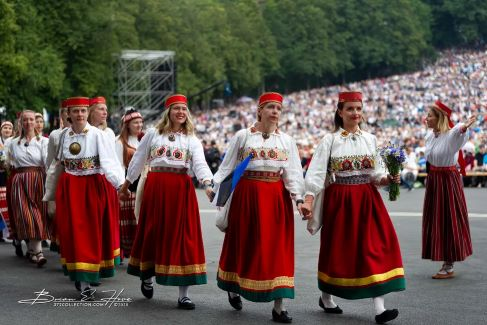
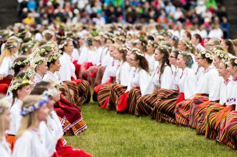
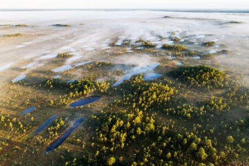
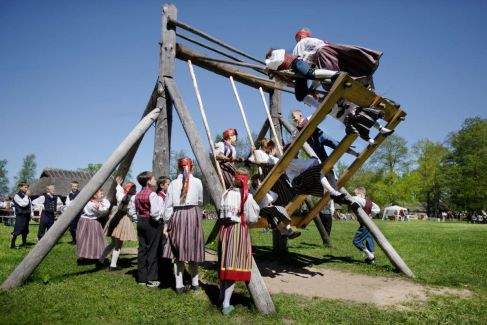

De Estse cultuur is diep geworteld in de natuur, het landelijke leven en de rijke geschiedenis van het Baltische land. Estland, gelegen aan de oostelijke rand van de Oostzee, heeft een unieke cultuur ontwikkeld door de eeuwen heen, beïnvloed door zowel de Finse, Duitse, Russische als Scandinavische culturen, maar toch altijd met een sterk gevoel van nationale identiteit.
De Estse taal, die nauw verwant is aan het Fins, speelt een belangrijke rol in de cultuur. Hoewel Estland een lange periode van overheersing door verschillende buitenlandse machten heeft gekend, heeft de taal de kern gevormd van de Estse identiteit. Het Estse epos Kalevipoeg, geschreven in de 19e eeuw door Friedrich Reinhold Kreutzwald, is een van de belangrijkste literaire werken in het land en versterkte het nationale bewustzijn in de tijd van het Estse nationalisme.
Een van de meest geliefde aspecten van de Estse cultuur is haar muzikale traditie. Laulupidu, het Estse zangfestival, is een van de grootste en oudste koorfestivals ter wereld, waar tienduizenden zangers samenkomen om traditionele Estse liederen te zingen. Dit festival speelt een cruciale rol in de nationale identiteit en was zelfs een van de drijvende krachten achter de Zingende Revolutie in de late jaren 80, die leidde tot de vreedzame herwerving van de onafhankelijkheid van Estland in 1991.
Naast zang zijn ook volksdansen belangrijk in Estse cultuur. Dansgroepen dragen traditionele Estse kleding en voeren oude dansen uit die vaak een directe band met de natuur en het landbouwleven weerspiegelen.
  De Esten hebben een diepgewortelde relatie met de natuur. Meer dan de helft van het land is bedekt met bossen, en Esten brengen graag tijd door in de buitenlucht, of het nu gaat om wandelen in de bossen, zwemmen in meren of het vieren van Jaanipäev, het midzomerfeest, een van de belangrijkste feestdagen. Tijdens Jaanipäev vieren Esten de zomerzonnewende met vreugdevuren, muziek en dans in de buitenlucht.
Schommelcultuur, of "kiigekultuur," is een belangrijk deel van de Estlandse folklore. Traditionele houten schommels, vaak groot genoeg voor meerdere personen, waren het middelpunt van dorpsfeesten en sociale bijeenkomsten, vooral tijdens festiviteiten zoals Jaanipäev (midzomer). Schommelen had zowel een recreatieve als symbolische functie, waarbij het werd geassocieerd met vruchtbaarheid en het versterken van de gemeenschap. Vandaag de dag wordt deze traditie nog steeds in ere gehouden, en moderne sporten zoals Kiiking hebben hun oorsprong in deze rijke schommelgeschiedenis van Estland.
Estse ambachten, zoals het weven van wol en linnen en het maken van houtproducten, spelen een grote rol in het behoud van de cultuur. Traditionele Estse patronen, zoals die op handgebreide wanten en sokken, worden van generatie op generatie doorgegeven. Estse kunst is vaak geïnspireerd door de natuur en de seizoenen, en hedendaagse kunstenaars combineren deze traditionele elementen met moderne technieken.
Hoewel Estland trots is op haar oude tradities, is het ook een van de meest vooruitstrevende digitale samenlevingen ter wereld. Als eerste land dat online stemmen introduceerde, staat Estland bekend als een digitale pionier. Het heeft sterke technologiebedrijven voortgebracht, waaronder Skype, en biedt bijna alle overheidsdiensten online aan.
Lees meer over Digital Nomads and E-Residency hier op Estland's E-residency webpagina.
De Estse cultuur is een rijke mix van oude tradities en moderne innovaties. Met een sterke band met de natuur, een liefde voor muziek en dans, en een diepe trots op hun taal en geschiedenis, hebben de Esten een unieke cultuur weten te behouden, ondanks de vele uitdagingen waarmee ze in het verleden werden geconfronteerd.